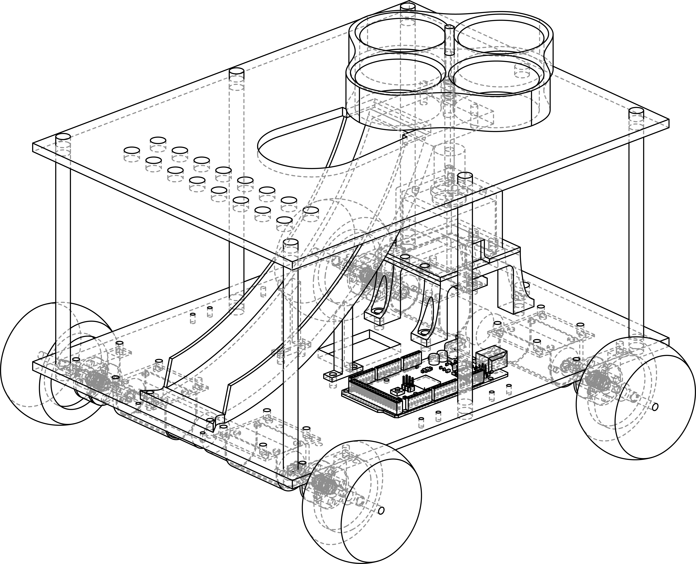
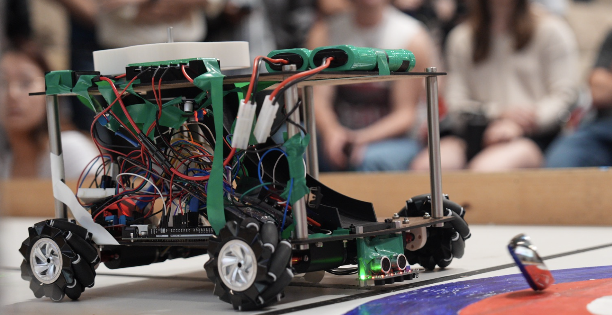
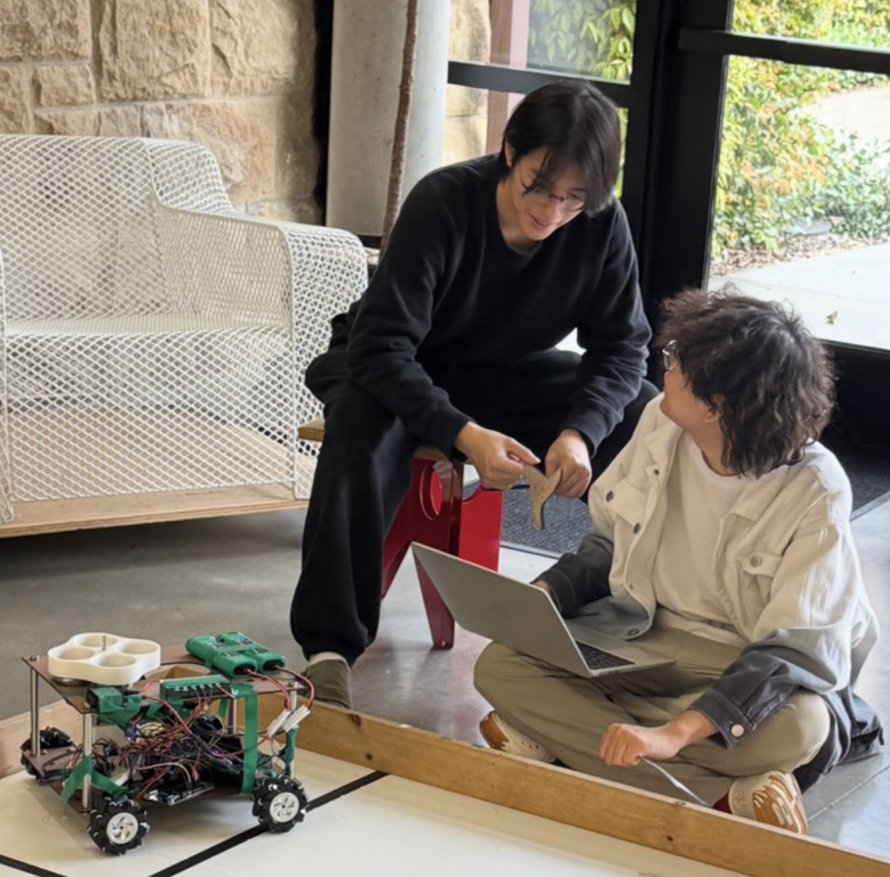
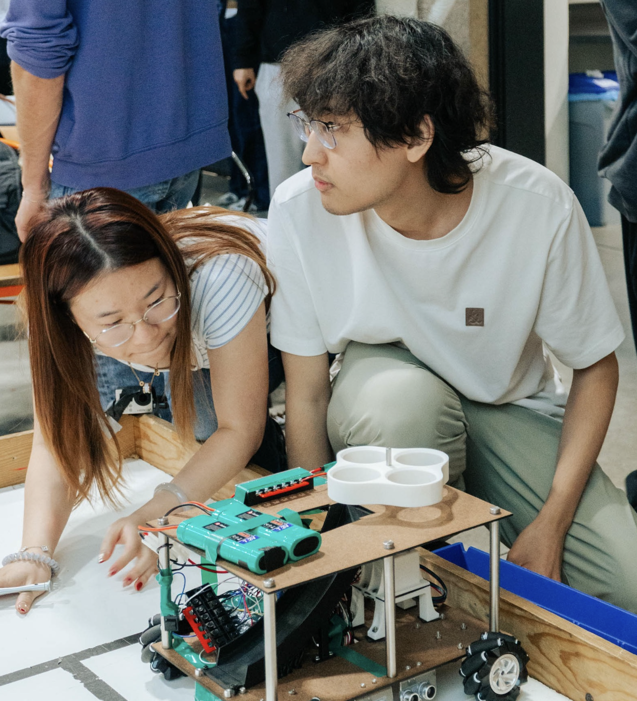
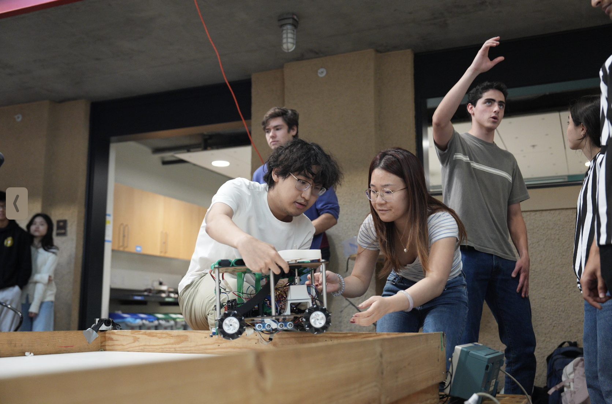
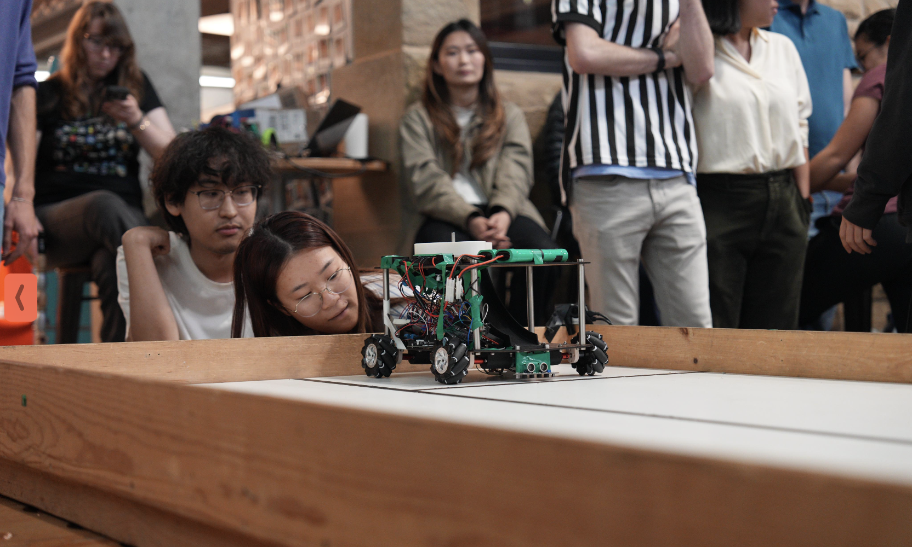
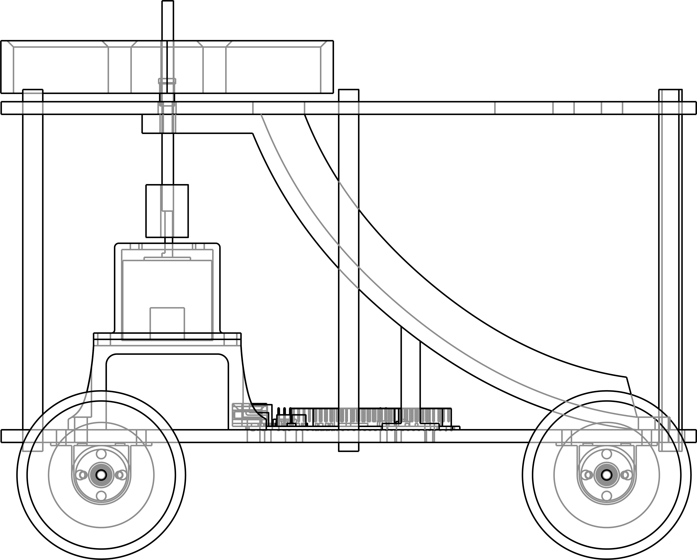
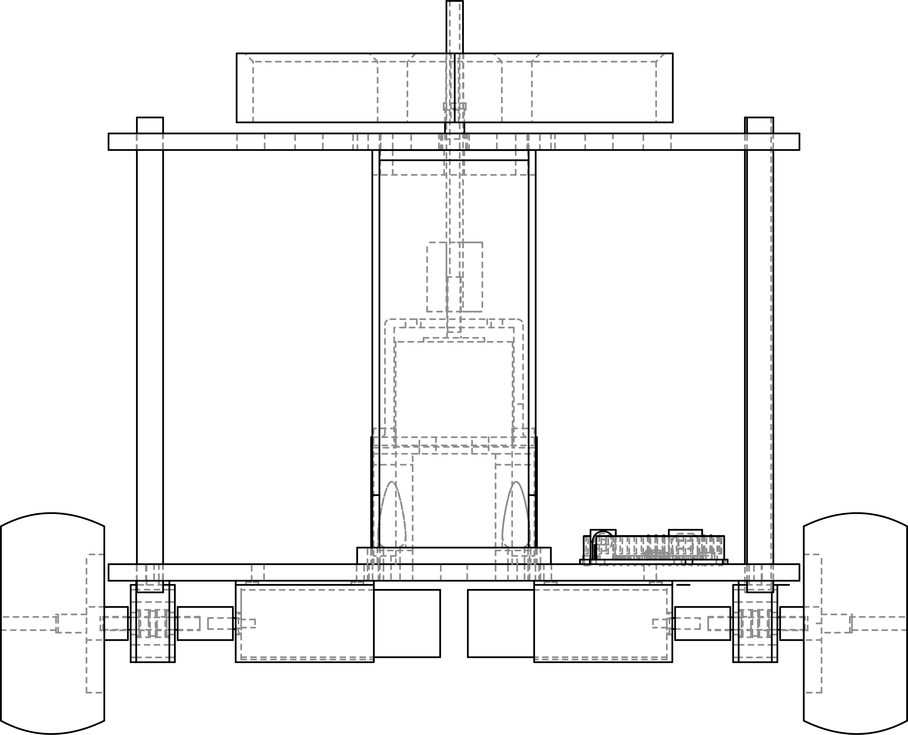
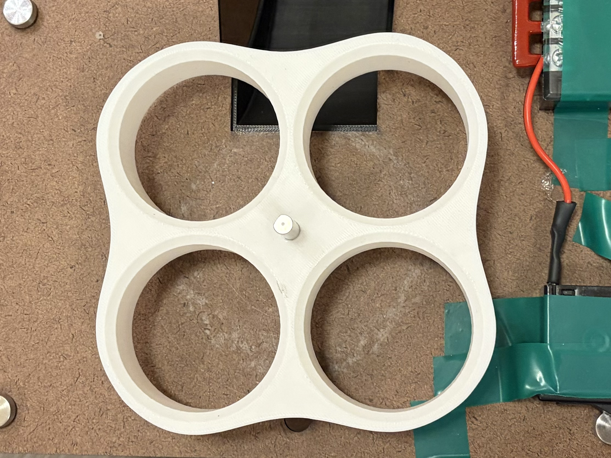
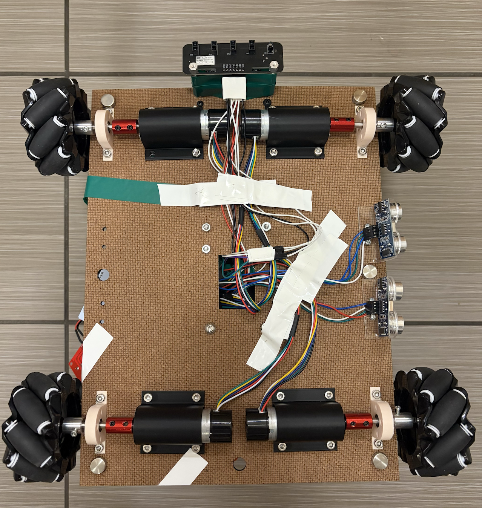

Subsystem 01
Powertrain & Chassis
DC motor-driven drivetrain with encoder feedback for precise positioning. Allows the DROID to navigate from starting zone to shot position and back autonomously.
Introduction to Mechatronics · Winter 2026 · Team 10
Meet CURL-E — our autonomous curling robot built for the BOTspiel Winter Olympics. CURL-E navigates a 4 × 16 ft curling sheet, launches pucks at a bull's-eye target, and returns autonomously to reload — all without human intervention.

Our DROID must compete in BOTspiel — an autonomous robot curling competition. Each DROID starts in a randomly assigned starting zone (A or B), is loaded with 3 pucks, and must play them all autonomously before returning to its zone to receive more. A maximum of 8 pucks may be played per match.
The DROID must navigate the 4 × 16 ft curling sheet, take shots from anywhere behind the hog line, and score points by landing pucks as close to the button as possible. Opponents are simultaneously trying to knock your pucks out and score their own — making strategy and accuracy critical.
ARENA DIAGRAM — 4 ft × 16 ft CURLING SHEET
| Zone | Points |
|---|---|
| Center / Button (Ø 8") | +5 |
| Middle Ring (Ø 16") | +2 |
| Outer Ring (Ø 24") | +1 |
| Past opponent's hog line | −3 |
Scores are the sum of all puck values. Puck location is determined by the puck's centre point.
If two pucks are stacked, only the one closer to the button is scored.
If your puck knocks an opponent's puck into a scoring zone, the opponent gains those points — and your puck scores its own landing zone.
To meet the challenge, our DROID was built around three core subsystems — each engineered to work together for reliable autonomous performance on the curling sheet.
DC motor-driven drivetrain with encoder feedback for precise positioning. Allows the DROID to navigate from starting zone to shot position and back autonomously.
Ultrasonic sensors for wall-following and distance detection, black tape line sensors for hog line detection, and wheel encoders for dead-reckoning navigation across the 16 ft sheet.
A stepper motor-driven mechanism launches one puck at a time with controlled force. After 3 shots, the DROID returns to the start zone for automatic reloading.






01 — Mechanical
The chassis and mechanical system was designed in Fusion 360, manufactured via FDM 3D printing and laser cutting, and assembled with custom fastener arrangements.
| Parameter | Value |
|---|---|
| Base Footprint | 13" × 13" |
| Chassis Material | Duron |
| Stepper Motor Torque | 42 N·cm (holding torque) |
| Max Speed | 0.25 m/s |
| Powertrain Torque | 2.8 kg·cm (rated) |
The chassis was designed with modularity as a core principle — every panel unbolts and swaps without full disassembly, allowing subassemblies to be revised and replaced quickly without rebuilding the entire robot.
Vibration isolation between the stepper motor and chassis frame was a key consideration, addressed through a redesigned motor housing with a silicone gasket dampening layer.





Three pucks are loaded face-down into the radial slots of a stepper motor-driven pinwheel, which sits above a drop-through cutout in the chassis floor. Each indexed step of the stepper releases one puck through the cutout and onto the ramp below. Drive is transmitted via a D-shaft and rigid shaft coupling to prevent rotational slip between the motor and pinwheel hub.
The ramp is steeper at the top and shallower at the exit, allowing pucks to accelerate quickly and leave the ramp travelling horizontally rather than at an angle to the playing surface.
The stepper motor sits in a two-part 3D-printed housing. The lid features thick walls and external damping ribs to reduce vibration transmission to the chassis. The base raises the motor on four integral legs, shortening the unsupported drive shaft length between the motor face and the pinwheel hub.
The chassis was laser cut from Duron and features a two-level design, with the two decks connected via six aluminium standoffs. The standoffs provide a rigid structural link between levels while keeping the assembly straightforward to disassemble for access to internal components.
Duron was selected for its ease of fabrication — laser cutting allows new cutouts and mounting holes to be added quickly as the design evolves, without requiring new parts or significant rework. This made it practical to iterate on component placement and cable routing throughout the build.
Over time, significant bending developed in the Duron panels under the weight of the robot's components. This sagging altered the contact angle and ground pressure of the mecanum wheels, which affected drivetrain performance. A stiffer material or additional cross-bracing would be warranted in a future revision.

The mobility system uses four mecanum wheels arranged in an X-configuration, allowing the robot to translate in the XY plane without rotation. Each wheel is driven by a dedicated DC geared motor with an integrated Hall-effect encoder that feeds speed data back to the Arduino Mega, giving the control system real-time visibility into each wheel's velocity independently.
Each wheel is independently governed by a closed-loop PID controller. The per-wheel encoder feedback allows each controller to correct for speed error individually, helping maintain consistent motion under uneven loading conditions — for example when carrying pucks offset to one side of the chassis.
Each motor is secured in a 3D-printed housing mounted to the chassis. A separate 3D-printed bearing carrier is mounted at the shaft mid-length, housing a low-friction bearing that provides a second support point for the drive shaft, reducing its unsupported span compared to a purely cantilevered arrangement.
02 — Electrical
The electrical system is built around an Arduino Mega, powered by two 7.4V LiPo batteries in series. A buck converter steps voltage down to 5V for the microcontroller and sensors, while the full 14.8V feeds the powertrain and stepper motor directly.
Hardware interrupt pins capture encoder Channel A pulses from all 4 drive motors — enabling precise RPM measurement without polling the main loop.
Timer-backed PWM on each of the four L298N ENA/ENB pins. The PI controller maps its output (0–255) here to close the speed loop independently per wheel.
Each channel outputs an analog voltage proportional to surface reflectance. Thresholded in firmware to a 5-bit mask — used for centerline tracking and hog line detection.
Step/Dir interface drives the DRV8825. Each rising edge on STEP advances by one microstep; DIR sets rotation. D53 active-LOW enable cuts motor current when idle. D42 E-Stop halts all motion immediately.
| Pin | Function | Connected To | Notes |
|---|---|---|---|
| ⚡ PWM — Motor Speed Control (D4–D7) | |||
| D4 ~ | Motor 1 ENA | L298N #1 ENA | Front-Left speed · PI output |
| D5 ~ | Motor 2 ENA | L298N #1 ENB | Front-Right speed · PI output |
| D6 ~ | Motor 3 ENA | L298N #2 ENA | Back-Left speed · PI output |
| D7 ~ | Motor 4 ENA | L298N #2 ENB | Back-Right speed · PI output |
| ⚡ External Interrupts — Encoder Channel A (D18–D21) | |||
| D18 INT5 | Encoder 1 A | Motor 1 Hall A | CHANGE interrupt · Front-Left |
| D19 INT4 | Encoder 2 A | Motor 2 Hall A | CHANGE interrupt · Front-Right |
| D20 INT3 | Encoder 3 A | Motor 3 Hall A | CHANGE interrupt · Back-Left |
| D21 INT2 | Encoder 4 A | Motor 4 Hall A | CHANGE interrupt · Back-Right |
| 🔵 Digital — Motor Direction (D22–D29) | |||
| D22, D23 | Motor 1 IN1/IN2 | L298N #1 IN1/IN2 | H-bridge direction · Front-Left |
| D24, D25 | Motor 2 IN1/IN2 | L298N #1 IN3/IN4 | H-bridge direction · Front-Right |
| D26, D27 | Motor 3 IN1/IN2 | L298N #2 IN1/IN2 | H-bridge direction · Back-Left |
| D28, D29 | Motor 4 IN1/IN2 | L298N #2 IN3/IN4 | H-bridge direction · Back-Right |
| 🔵 Digital — Encoder Channel B (D30–D33) | |||
| D30–D33 | Encoders 1–4 B | Motors 1–4 Hall B | Quadrature direction channel (polled) |
| 🟡 Stepper Motor Control (D34, D35, D53) | |||
| D34 | Stepper STEP | DRV8825 STEP | Rising edge = 1 microstep · Timer3 ISR |
| D35 | Stepper DIR | DRV8825 DIR | HIGH = CW, LOW = CCW |
| D53 | Stepper ENABLE | DRV8825 EN | Active LOW — disabled when idle |
| 🔵 Digital — Ultrasonic Sensors (D36–D41) | |||
| D36, D37 | USS Front Trig/Echo | HC-SR04 #1 | Forward obstacle detection |
| D38, D39 | USS Left-Rear Trig/Echo | HC-SR04 #2 | Left-wall alignment · rear |
| D40, D41 | USS Left-Front Trig/Echo | HC-SR04 #3 | Left-wall alignment · front |
| 🔴 Safety (D42) | |||
| D42 | E-Stop Button | Momentary push button | Active LOW · internal pull-up enabled |
| 🟢 Analog Inputs — Line Sensor (A1–A5) | |||
| A1 | IR Channel 1 | IR Array pin 1 | Far Left |
| A2 | IR Channel 2 | IR Array pin 2 | Left-Center |
| A3 | IR Channel 3 | IR Array pin 3 | Center |
| A4 | IR Channel 4 | IR Array pin 4 | Right-Center |
| A5 | IR Channel 5 | IR Array pin 5 | Far Right |
Two 7.4V LiPos in series → 14.8V bus. LM2596 buck steps to 5V for MCU & sensors. Fused and reverse-polarity protected per subsystem.
Central hub. Runs FSM, PI controllers, sensor reads, and stepper timing. 54 digital I/O pins + 16 analog inputs. Powered from 5V logic rail.
2× L298N dual H-bridge drivers control 4 DC geared motors. Direction set via IN1/IN2 digital pins; speed via PWM on ENA/ENB. Draws directly from 14.8V bus.
DRV8825 driver in Step/Dir mode. Microstepping up to 1/32. Current set via trim pot. Timer3 ISR generates step pulses. Enable pin goes LOW to energize coils.
3× HC-SR04 ultrasonic (front obstacle + 2× left-wall pair for alignment). 5-ch IR reflectance array detects black tape on A1–A5. 4× Hall-effect quadrature encoders on each drive motor feed the PI speed controllers via hardware interrupts.
03 — Software
All control logic runs on the Arduino Mega. Wheel encoders provide real-time speed and position feedback, enabling PID control loops that ensure precise, repeatable movement across the curling sheet.
The DROID's behaviour is governed by a non-blocking finite state machine running in the main Arduino loop. Each state handles a distinct phase of operation — from initial alignment to shot execution and reload — with well-defined transitions triggered by sensor events and timers.
Each reload cycle fires 3 pucks at different lateral positions — center, left-offset, and right-offset — to spread coverage across the house and avoid already-occupied scoring lanes.
Each drive wheel motor is paired with a quadrature encoder that continuously reports its position and speed back to the Arduino. Four independent PI controllers — one per wheel — run at a fixed periodic interval, comparing the measured speed against the target RPM and adjusting motor PWM output in real time to eliminate error.
This closed-loop approach means the robot moves the exact distance commanded — compensating for surface friction, battery voltage drop, and mechanical asymmetry between motors — which is critical for accurate shot placement on the curling sheet.
Encoder pulses are captured via hardware interrupts. Each PID interval, the raw RPM is derived from the delta in encoder ticks. Because velocity from discrete ticks is inherently noisy — especially at low speeds — a first-order low-pass filter smooths the measurement:
SET rawRPM ← (tickDelta / dt) × (60 / PPR)
SET filteredRPM ← filteredRPM
+ LPF_ALPHA × (rawRPM − filteredRPM)
MOB_LPF_ALPHA balances rapid dynamic response against noise rejection.
The control output is the sum of proportional, integral, and derivative terms. MOB_PID_KD is set to 0, making this a PI controller in practice:
SET error ← targetRPM − filteredRPM
SET derivative ← (error − prevError) / dt
SET pidOutput ← (Kp × error)
+ (Ki × integral)
+ (Kd × derivative)
The D-term would amplify encoder jitter; PI alone delivers stable wheel speed.
Accumulation is paused if the output is already saturated and the error would make it worse. A hard clamp provides a second failsafe:
SET saturated ← |integral × Ki| ≥ PWM_MAX
SET sameSign ← SIGN(error) = SIGN(integral)
IF NOT (saturated AND sameSign) THEN
SET integral ← integral + error × dt
END IF
SET integral ← CLAMP(integral, −MAX, +MAX)
A sudden polarity flip while spinning causes large current spikes. The driver detects the reversal request and brakes first:
ON new speed command:
IF direction reversed AND |filteredRPM| > REVERSAL_THRESH THEN
SET isReversing ← TRUE
SET pendingRPM ← newTarget
END IF
EACH PID tick:
IF isReversing THEN
IF |filteredRPM| < STOPPED_THRESH THEN
SET targetRPM ← pendingRPM
SET isReversing ← FALSE
ELSE
SET targetRPM ← 0
END IF
END IF
DC motors need a minimum voltage to overcome static friction. A feedforward floor on PWM ensures small control efforts still move the motor:
SET pwm ← |pidOutput|
IF 0 < pwm < PWM_DEADZONE THEN
SET pwm ← PWM_DEADZONE
END IF
SET pwm ← CLAMP(pwm, 0, PWM_MAX)
CALL applyToDrive(direction, pwm)
X-type inverse kinematics computes per-wheel RPM. If any wheel exceeds MOB_MAX_RPM, all four are scaled together to preserve the motion vector:
SET FL ← vx − vy − rotation
SET FR ← vx + vy + rotation
SET BL ← vx + vy − rotation
SET BR ← vx − vy + rotation
SET peak ← MAX(|FL|, |FR|, |BL|, |BR|)
IF peak > MAX_RPM THEN
SET scale ← MAX_RPM / peak
SET FL, FR, BL, BR ← FL×scale, FR×scale,
BL×scale, BR×scale
END IF
Click a folder below to explore the source files for each subsystem. Each file opens in a full code viewer with syntax highlighting and line-level interaction.
04 — Bill of Materials
Complete parts list including quantities, suppliers, and estimated costs. Update values to reflect your actual purchases and sourcing.
| # | Component | Assembly | Supplier | Qty | Unit $ | Total | Personal? |
|---|---|---|---|---|---|---|---|
| ⚙️ Loading Assembly — Shaft Assembly | |||||||
| L01 | Pinwheel | Shaft Assm | Amps Custom | 1 | $3.00 | $3.00 | Yes |
| L02 | Flanged Sleeve Bearing, 6mm ID | Shaft Assm | Amazon | 1 | $9.48 | $9.48 | Yes |
| L03 | D Shaft | Shaft Assm | Supply Closet | 1 | $1.50 | $1.50 | Yes |
| L04 | Shaft Coupling | Shaft Assm | Supply Closet | 1 | $1.50 | $1.50 | No |
| ⚙️ Loading Assembly — Motor Housing Assembly | |||||||
| L05 | Nema 17 Stepper Motor | Motor Housing Assm | Amazon | 1 | $10.99 | $10.99 | Yes |
| L06 | Motor Lid | Motor Housing Assm | Amps Custom | 1 | $0.00 | $0.00 | Yes |
| L07 | Motor Base | Motor Housing Assm | Amps Custom | 1 | $0.00 | $0.00 | Yes |
| L08 | Gasket | Motor Housing Assm | Amazon | 1 | $6.00 | $6.00 | Yes |
| L09 | DRV8825 Motor Driver* | Electronics | Supply Closet | 1 | $3.00 | $3.00 | No |
| 🔩 Chassis Assembly — Structural | |||||||
| C01 | 15cm Standoffs | Structural Assm | Amazon | 1 | $15.48 | $15.48 | Yes |
| C02 | Duron Sheet | Structural Assm | Amps Custom | 2 | $3.00 | $6.00 | Yes |
| C03 | Ramp | Structural Assm | Amps Custom | 1 | $13.76 | $13.76 | Yes |
| ⚡ Chassis Assembly — Electronics | |||||||
| C04 | Ultrasonic Sensor | Electronics | Amazon | 3 | $2.54 | $7.63 | Yes |
| C05 | IMU | Electronics | Amazon | 1 | $10.45 | $10.45 | Yes |
| C06 | Reflectance (Tape) Sensor* | Electronics | Supply Closet | 1 | $4.00 | $4.00 | No |
| C07 | Arduino Mega | Electronics | Supply Closet | 1 | $25.00 | $25.00 | No |
| C08 | Screw Terminals* | Electronics | Supply Closet | 3 | $0.75 | $2.25 | No |
| C09 | Switches* | Electronics | Supply Closet | 2 | $0.50 | $1.00 | No |
| 🔧 Mobility Assembly — Wheel Assembly | |||||||
| M01 | Mecanum Wheels, 2pcs | Wheel Assm | Amazon | 2 | $22.15 | $44.29 | Yes |
| M02 | Shaft Coupling | Wheel Assm | Amazon | 2 | $9.26 | $18.52 | Yes |
| M03 | D Shaft | Wheel Assm | Amazon | 2 | $10.90 | $21.80 | Yes |
| M04 | 5×10×4mm Bearing | Wheel Assm | Amazon | 1 | $7.63 | $7.63 | Yes |
| M05 | Bearing Housing | Wheel Assm | Amps Custom | 1 | $0.00 | $0.00 | Yes |
| M06 | Motor Housing | Wheel Assm | Amps Custom | 4 | $0.00 | $0.00 | Yes |
| M07 | DC Motor + Encoder | Wheel Assm | Amazon | 2 | $44.38 | $88.76 | Yes |
| M08 | L298 Motor Driver* | Electronics | Supply Closet | 1 | $2.00 | $2.00 | No |
| PURCHASED TOTAL | — | — | $265.29 | — | |||
| GRAND TOTAL | — | — | $304.04 | — | |||
* Approximate pricing. Items marked "Supply Closet" sourced from lab inventory. Custom parts manufactured at Amps lab at no direct material charge.
05 — Reflections
An honest look back at the full arc of the project — what worked, what didn't, and what we'd tell next year's Introduction to Mechatronics teams.
With three weeks from project release to competition day, scope decisions were made early and defended deliberately. The team organised features around a Product Nucleus — the irreducible set of capabilities the robot had to have to compete — and treated everything else as optional. The MVP was completed within the first two weeks, leaving the final week for integration testing, edge case handling, and performance tuning.
The Product Nucleus centred on three non-negotiable capabilities: Mobility (forward, backward, and parallel shift), a reliable Launch Mechanism (stepper motor + puck loading device), and Navigation (ultrasonic wall-following and line detection for hog line sensing). Drive control and chassis/powertrain design were treated as features within mobility; everything else was evaluated against time and skill constraints before being committed to.
Feb 14 — Project released
Feb 17–23 — Design finalised; mechanical prototypes iterated
Feb 24–27 — All subsystems completed independently
Feb 28 — Full system integration; first successful drive
Mar 1+ — Testing, tuning, and hardening for competition
One of the biggest wins on the software side was maintaining a clean, well-defined architecture from the start. Each subsystem — mobility, sensors, the state machine, the stepper launcher — lived in its own module with a clear public API. This separation meant that when something went wrong, we could isolate it quickly rather than hunting through tangled code. It also meant that bringing subsystems together for the first time was largely painless; most of the integrations worked on the first few tries with minimal debugging required.
On the control side, implementing PID for the drivetrain turned out to be essential rather than optional. The uneven weight distribution of the chassis — a real concern with a robot carrying a launcher and battery pack — would have caused significant straight-line drift without closed-loop speed control. The PID loops on each wheel compensated for motor-to-motor variation and chassis asymmetry, keeping the robot tracking straight and making our navigation reliable under real competition conditions.
A few mechanical decisions paid off significantly. Building proper motor housings with dedicated support structures meant the robot's weight was transferred to the chassis frame rather than bearing down on the motor shafts — a small detail that prevents premature wear and binding. We used deep groove ball bearings throughout, which handled radial loads well. In hindsight, tapered roller bearings would have been a stronger choice for the Mecanum wheel axles specifically, as they handle the axial (thrust) forces that Mecanum wheels generate during lateral movement more effectively. Similarly, keyed shaft joints instead of friction-fit connections would have made the drivetrain more mechanically robust under repeated loading.
Perhaps the single best process decision we made was designing the full electrical schematic in KiCad before touching a single wire. Having a complete, verified schematic meant that when we moved to physical wiring, everything went together correctly the first time. Debugging an electrical system without a reference schematic is painful — debugging one with a clean schematic is fast. This one habit saved us hours and is something we'd recommend unconditionally to future teams.
Our most persistent mechanical challenge was motor vibration working fasteners loose over time. Despite careful assembly, screws in the chassis through-holes would begin to back out after two or three runs — even those tightened as firmly as possible — causing progressive misalignment and intermittent failures. The primary source was the stepper motor. To resolve it, we redesigned and reprinted the stepper motor housing and introduced a silicone gasket between the motor body and the chassis mounting surface. This dampening layer dramatically reduced vibration transmission through the frame and largely eliminated the fastener-loosening problem.
During testing we found that the HC-SR04 ultrasonic sensors operated too slowly for the update rate our drivetrain control loop required, creating timing conflicts that disrupted motion commands. A second, more subtle problem appeared during turning: the pulse from one sensor would occasionally bounce off a surface and be received by the adjacent sensor, producing false distance readings. This caused a characteristic wheel jitter during wall-alignment as the control loop reacted to phantom obstacles. Switching to time-of-flight (ToF) distance sensors would resolve both issues — they operate at higher update rates and emit a much tighter beam, making inter-sensor crosstalk virtually impossible.
Key Takeaways
We had a great time working on this project and are proud of CURL-E! The process was challenging and involved a lot of non-linear progress, but our robot ultimately demonstrated reliable performance — at least until the very end.
Right before the curling competition, the robot started acting unpredictably. After extensive testing and reconfiguration throughout the quarter, it seems the system had simply been pushed to its limits. Without any intentional mechanical or software changes, one of the Mecanum wheels suddenly began spinning uncontrollably. We believe the encoder connection was damaged, which caused the control system to drive the motor at maximum PWM (255/255). As a result, the robot could no longer move in a straight line and was effectively out of the competition.
Although we made it to the quarterfinals, the robot eventually failed and was unable to score pucks due to this encoder issue. This was disappointing for the whole team because we knew the true potential of CURL-E.
Our final piece of advice to future teams is to understand and respect your robot's limits. These scrappy machines experience significant bending, vibration, dynamic loading, and wire fatigue every time you test them. Reliability becomes just as important as functionality. Keep that in mind as you iterate and especially as you approach competition day.
05 — Team
Four mechanical engineering students who built the DROID together in just 15 days.